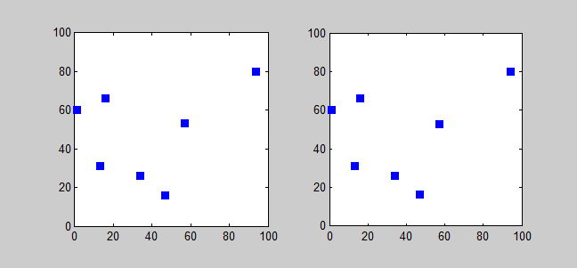
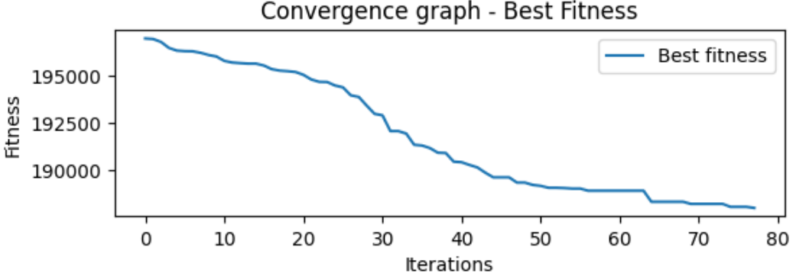
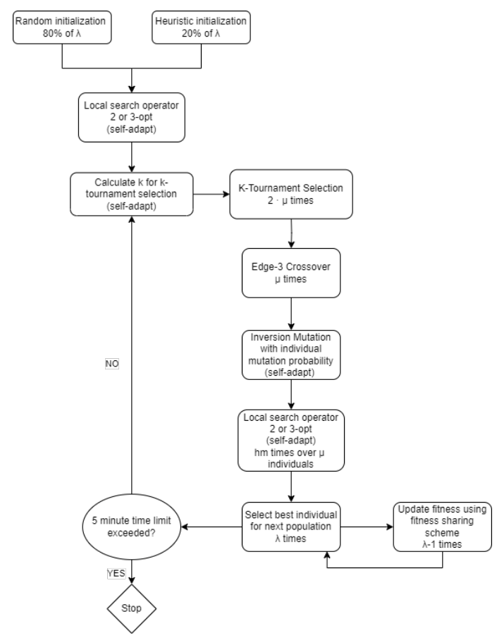

Genetic Algorithm TSP Solver
In this project, I implemented a Genetic Algorithm to solve the Traveling Salesman Problem (TSP). The goal was to optimize the route a salesman takes to visit a set of cities, minimizing the total travel distance. The project explored advanced techniques to enhance the algorithm’s efficiency and accuracy.
Technologies used: Python, Numpy, Matplotlib, Numba.
Main features of the algorithm:
- Fitness sharing in the elimination phase to maintain diversity.
- 2-opt and 3-opt local search methods for route optimization.
- Adaptive and self-adaptive mechanisms for tuning mutation and selection parameters.
The solution representation was implemented using a permutation of numbers representing cities, stored in NumPy arrays. Each candidate solution represents a distinct route. The adaptive nature of the algorithm allowed dynamic adjustment of key parameters such as mutation probability and selection mechanisms during the optimization process.

Example of an optimized route found by the genetic algorithm.
Optimization strategies:
- Initialization: The initial population is a mix of random solutions and heuristic-based solutions, balancing exploration and exploitation. The heuristic adjusts the level of greediness based on an exponential probability distribution.
- Selection: k-tournament selection was used, with an adaptive k-value determined by the algorithm to optimize solution selection over generations.
- Mutation: Inversion mutation was preferred due to its ability to introduce high variability, particularly beneficial in asymmetric distance matrices.
- Crossover: Edge-3 crossover was implemented to ensure offspring inherit common structures from both parents, improving the exploration of the solution space.
- Local Search: The algorithm alternates between 2-opt and 3-opt local search methods, adjusting based on self-adaptive parameters to explore better routes more effectively.

A convergence graph showing how fitness improves over iterations.
Challenges faced:
- Fine-tuning the mutation rate and selection mechanism through self-adaptive schemes.
- Balancing between exploitation and exploration using fitness sharing to prevent premature convergence.
Experiment Results: The genetic algorithm consistently outperformed traditional heuristic approaches across various test cases, demonstrating its ability to find more optimal solutions. This method effectively balances exploration and exploitation, yielding improved route optimization while maintaining population diversity throughout the process. The integration of advanced techniques such as self-adaptive mechanisms and local search methods contributed significantly to the quality of the results.

Flowchart of the genetic algorithm illustrating the main phases.
You can check out the implementation and experiment results on GitHub.